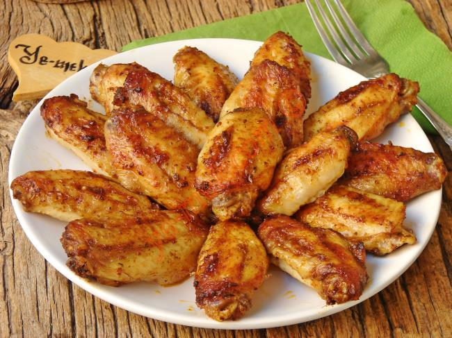

Fırında Tavuk Kanat Tarifi

Malzemeler:
- 1 çay kaşığı domates salçası
- 1 çay kaşığı kekik
- 1/2 çay kaşığı karabiber
- 4 yemek kaşığı zeytinyağı
- 1 diş rendelenmiş sarımsak
- 1/2 çay kaşığı kimyon
- 650 gr tavuk kanat
- 1 çay kaşığı kırmızı toz biber
- 1/2 çay kaşığı köri
- 1 çay kaşığı tuz
Fırında Tavuk kanat yapılışı:
- 650 gr tavuk kanadı güzelce yıkayıp, suyunun süzülmesini sağlayın.
- Suyu süzülen tavuk kanatlarının üzerine bıçak yardımı ile çizikler atın.
- Orta boy derin bir kap içine 1 çay kaşığı dolusu domates salçası koyun.
- Üzerine 3-4 yemek kaşığı zeytinyağı, 1 diş rendelenmiş sarımsak, 1 çay kaşığı kırmızı toz biber, 1 çay kaşığı kekik, yarım çay kaşığı karabiber, yarım çay kaşığı kimyon, yarım çay kaşığı köri ve 1 çay kaşığı tuz ekleyin.
- Tüm sos malzemelerini karıştırın.
- Hazırladığınız sosun içine tavuk kanatlarını koyun, elinizle karıştırarak kanatların her tarafının sosa bulanmasını sağlayın.
- Kabın üzerine streç film ile örtün, tavuk kanatları buzdolabında en az 1-2 saat kadar dinlenmeye bırakın.
- Dinlenen soslu tavuk kanatlarını orta boy bir fırın kabı içine dizin.
- Önceden ısıtılmış 190 derece fırına verin, üzerleri iyice kızarana kadar yaklaşık 30 dakika pişirin.